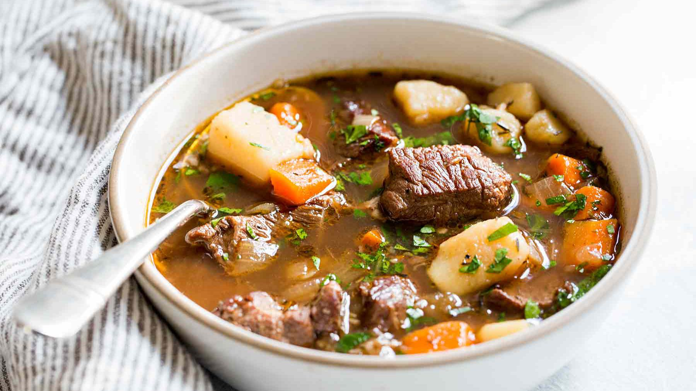

Irish stew

Classic recipe for Ireland's most iconic one-pot dish
Ingredients
- 2 tbsp olive oil
- 1.25 kg beef chuck
- 3/4 tsp each salt and black pepper
- 3 garlic cloves
- 2 onions
- 180g bacon
- 3 tbsp flour
- 440ml Guinness
- 4 tbsp tomato paste
- 750 ml chicken stock/broth
- 3 carrots
- 2 large celery stalks
- 2 bay leaves
- 3 sprigs thyme
Steps
- Cut the beef into 5cm chunks. Pat dry then sprinkle with salt and pepper.
- Heat oil in a heavy based pot over high heat. Add beef in batches and brown well all over. Remove onto plate. Repeat with remaining beef.
- Lower heat to medium. If the pot is looking dry, add oil.
- Cook garlic and onion for 3 minutes until softening, then add bacon.
- Cook until bacon is browned, then stir through carrot and celery.
- Add flour, and stir for 1 minute to cook off the flour.
- Add Guinness, chicken broth/stock and tomato paste. Mix well (to ensure flour dissolves well), add bay leaves and thyme.
- Return beef into the pot (including any juices). Liquid level should just cover - see video or photos.
- Cover, lower heat so it is bubbling gently. Cook for 2 hours - the beef should be pretty tender by now. Remove lid then simmer for a further 30 - 45 minutes or until the beef falls apart at a touch, the sauce has reduced and thickened slightly.
- Skim off fat on surface, if desired. Adjust salt and pepper to taste. Remove bay leaves and thyme.
- Serve with creamy mashed potatoes!!